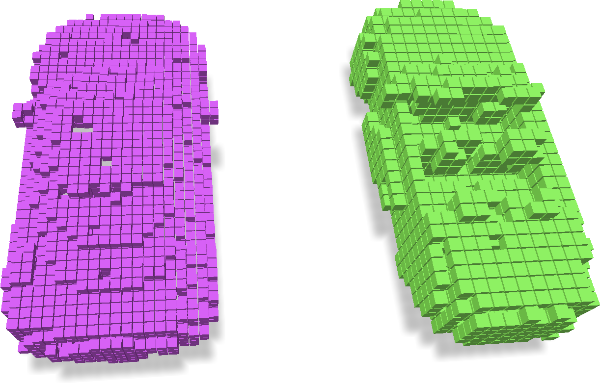
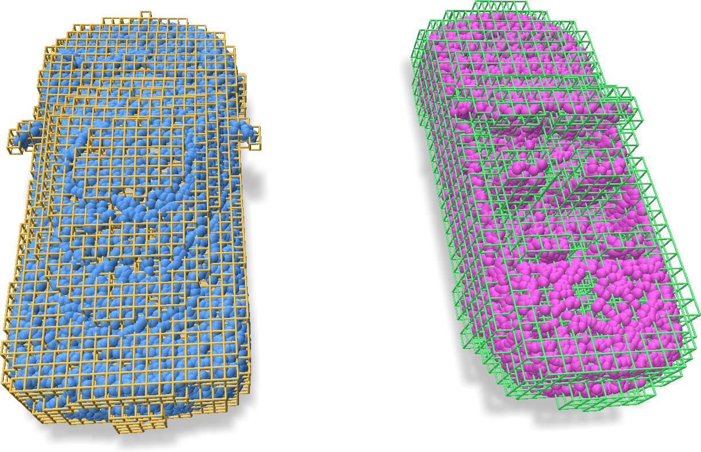
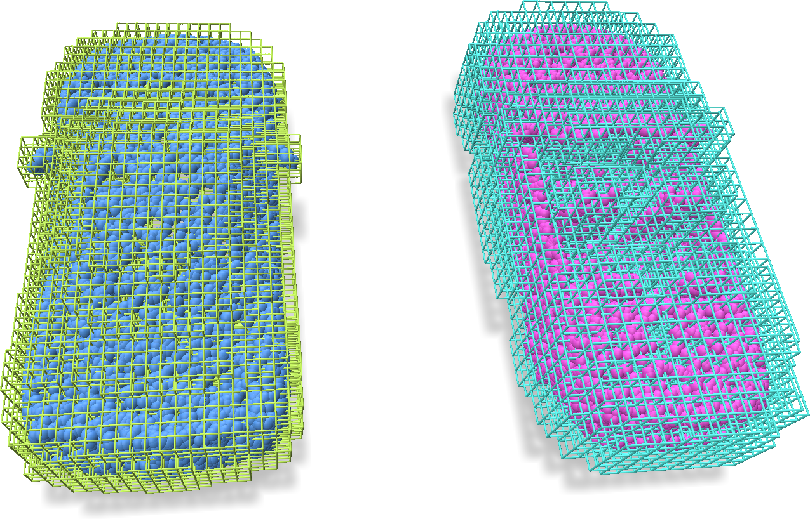
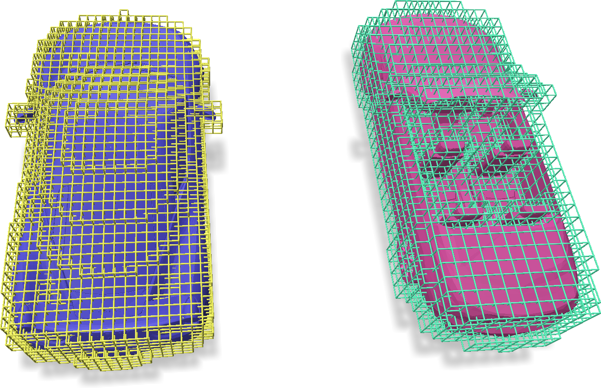
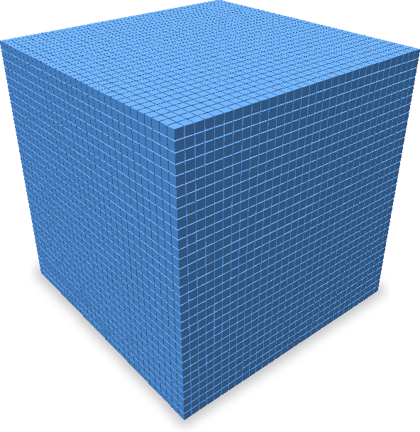
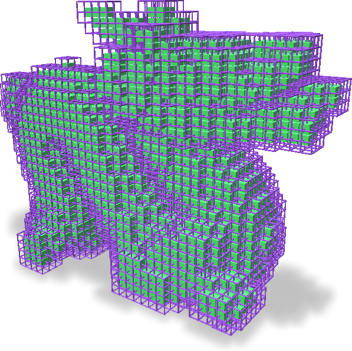
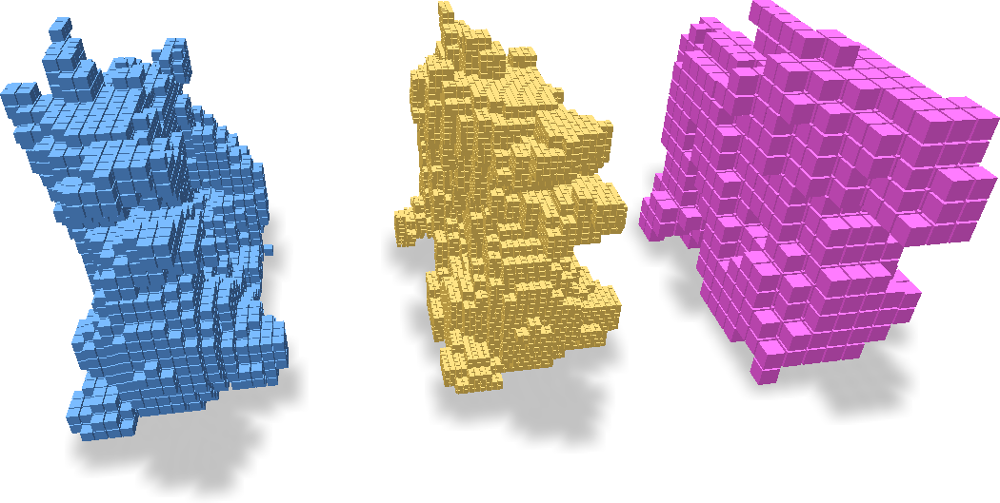

Building Sparse Grids
We introduce several ways to construct sparse voxel grids from various data sources including point clouds, coordinate lists, triangle meshes, and deriving from other grids.
All the examples below could be found in full version (including visualization) at examples/grid_building.py and examples/grid_subdivide_coarsen.py.
From Coordinate Lists
If you already have an integer list of the ijk coordinates for each voxel in the grid, you could directly build grids from the list.
Additionally, you will have to specify the voxel sizes and voxel origins for the grid.
An example is as follows:
import fvdb
from fvdb.utils.examples import load_car_1_mesh, load_car_2_mesh
coords_1, _ = load_car_1_mesh()
coords_2, _ = load_car_2_mesh()
coords_jagged = fvdb.JaggedTensor([
coords_1.long().cuda(),
coords_2.long().cuda()
])
voxel_sizes = [[0.1, 0.1, 0.1], [0.15, 0.15, 0.15]]
grid = fvdb.gridbatch_from_ijk(coords_jagged, voxel_sizes=voxel_sizes, origins=[0.0] * 3)
The above code assumes that you want to build a grid with two batch elements, one with voxel size [0.1, 0.1, 0.1], and the other with voxel size [0.15, 0.15, 0.15] (although usually you just want all the elements in your batch to have the same size, in which case you could just pass in voxel_sizes=[0.1, 0.1, 0.1]).
The same logic applies for origins that specifies the world coordinates of voxel (0, 0, 0), which we set to the origin here.
The grid will be constructed on the same device as coords_jagged, which is a JaggedTensor. The JaggedTensor is built from two numpy int64 arrays with size [*, 3] called coords_1 and coords_2.

From Point Clouds
You could either choose to quantize the coordinates of your point cloud into ijk coordinates yourself (e.g. using np.unique((xyz / voxel_size).floor(), axis=0)), or let fvdb handle this logic. Specifically, you could do:
import fvdb
from fvdb.utils.examples import load_car_1_mesh, load_car_2_mesh
coords_1, _ = load_car_1_mesh()
coords_2, _ = load_car_2_mesh()
# Assemble point clouds into JaggedTensor
pcd_jagged = fvdb.JaggedTensor([
coords_1.cuda(),
coords_2.cuda()
])
voxel_sizes = [[0.1, 0.1, 0.1], [0.15, 0.15, 0.15]]
# Method 1:
grid_a1 = fvdb.gridbatch_from_points(pcd_jagged, voxel_sizes=voxel_sizes, origins=[0.0] * 3)
# Method 2:
grid_a2 = fvdb.GridBatch(device=pcd_jagged.device)
grid_a2.set_from_points(pcd_jagged, voxel_sizes=voxel_sizes, origins=[0.0] * 3)
Above we show two methods of building grids from points. Similar functions exist for other grid building approaches. The built grids are shown as following:

In some applications, you may want to build a dilated version of the grid by ensuring that all \(2\times 2 \times 2\) voxels around each point are included in the built grid. That said, you could build the grid by:
import fvdb
from fvdb.utils.examples import load_car_1_mesh, load_car_2_mesh
coords_1, _ = load_car_1_mesh()
coords_2, _ = load_car_2_mesh()
# Assemble point clouds into JaggedTensor
pcd_jagged = fvdb.JaggedTensor([
coords_1.cuda(),
coords_2.cuda()
])
voxel_sizes = [[0.1, 0.1, 0.1], [0.15, 0.15, 0.15]]
# Build grid from containing nearest voxels to the points
grid_b = fvdb.gridbatch_from_nearest_voxels_to_points(pcd_jagged, voxel_sizes=voxel_sizes, origins=[0.0] * 3)

From Meshes
We allow building grids enclosing a triangle mesh easily. The given triangle mesh does not have to be manifold nor watertight and it will be treated as a triangle soup internally. An example to build grids from meshes is shown as follows:
import fvdb
from fvdb.utils.examples import load_car_1_mesh, load_car_2_mesh
mesh_1_v, mesh_1_f = load_car_1_mesh(mode='vf')
mesh_2_v, mesh_2_f = load_car_2_mesh(mode='vf')
mesh_v_jagged = fvdb.JaggedTensor([
mesh_1_v.float().cuda(),
mesh_2_v.float().cuda()
])
mesh_f_jagged = fvdb.JaggedTensor([
mesh_1_f.long().cuda(),
mesh_2_f.long().cuda()
])
voxel_sizes = [[0.1, 0.1, 0.1], [0.15, 0.15, 0.15]]
grid = fvdb.gridbatch_from_mesh(mesh_v_jagged, mesh_f_jagged, voxel_sizes=voxel_sizes, origins=[0.0] * 3)
Here mesh_1_v and mesh_1_f are the vertex array and triangle array of the mesh to build grid from, with the shape of \((V, 3)\) and \((F, 3)\). The triangle array is an integer array that indexes into the vertex array (starting from 0 for each element in the batch). Same for another mesh_2_v and mesh_2_f.

From Dense
We have APIs for you to build dense grids of shape \((D, H, W)\) containing the full \(D\times H \times W\) voxels.
import fvdb
grid = fvdb.gridbatch_from_dense(num_grids=1, dense_dims=[32, 32, 32], device="cuda")

If you are comparing the performance of dense pytorch 3D tensors vs sparse grids, it is usually very helpful to build the exact same input (including grid and features). In fvdb.nn, we provide a thin wrapper class VDBTensor that works like a torch.Tensor, yet enclosing the grid topology. To convert data back and forth from dense PyTorch Tensors, we could do:
import torch
import fvdb
from fvdb.nn import VDBTensor
# Easy way to initialize a VDBTensor from a torch 3D tensor [B, D, H, W, C]
dense_data = torch.ones(2, 32, 32, 32, 16).cuda()
sparse_data = fvdb.nn.vdbtensor_from_dense(dense_data, voxel_sizes=[0.1] * 3)
dense_data_back = sparse_data.to_dense()
assert torch.all(dense_data == dense_data_back)
Here sparse_data will be a fvdb.nn.VDBTensor class, containing both feature and grid attribute.
Such a class could be fed into all the neural network components available in fvdb.nn.
Deriving from other grids
Dual grid
A dual grid (of a primal grid) is also a grid, with its voxel centers covering the corners of the primal grid, and corners taking the positions of the centers of the primal grid. A dual grid shares the same voxel sizes as its primal grid, and is just a simple shift of half the voxel size in translation. In the picture below, green grid is the primal grid while purple grid is its dual.

To create a dual grid from a given primal grid, use GridBatch.dual_grid():
import fvdb
from fvdb.utils.examples import load_dragon_mesh
coords_1, _ = load_dragon_mesh()
grid_primal = fvdb.gridbatch_from_points(fvdb.JaggedTensor([coords_1]))
grid_dual = grid_primal.dual_grid()
Subdividing and Coarsening a grid
The grid could be subdivided or coarsened with a subdivision/coarsening factor provided:
import fvdb
from fvdb.utils.examples import load_happy_mesh
coords_1, _ = load_happy_mesh(mode='vf')
grid = fvdb.gridbatch_from_points(fvdb.JaggedTensor([coords_1]))
grid_subdivided = grid.subdivided_grid(2)
grid_coarsened = grid.coarsened_grid(2)

The features associated with the grids could be processed via the examples in Grid Operations.
Refer to the corresponding section for more details.